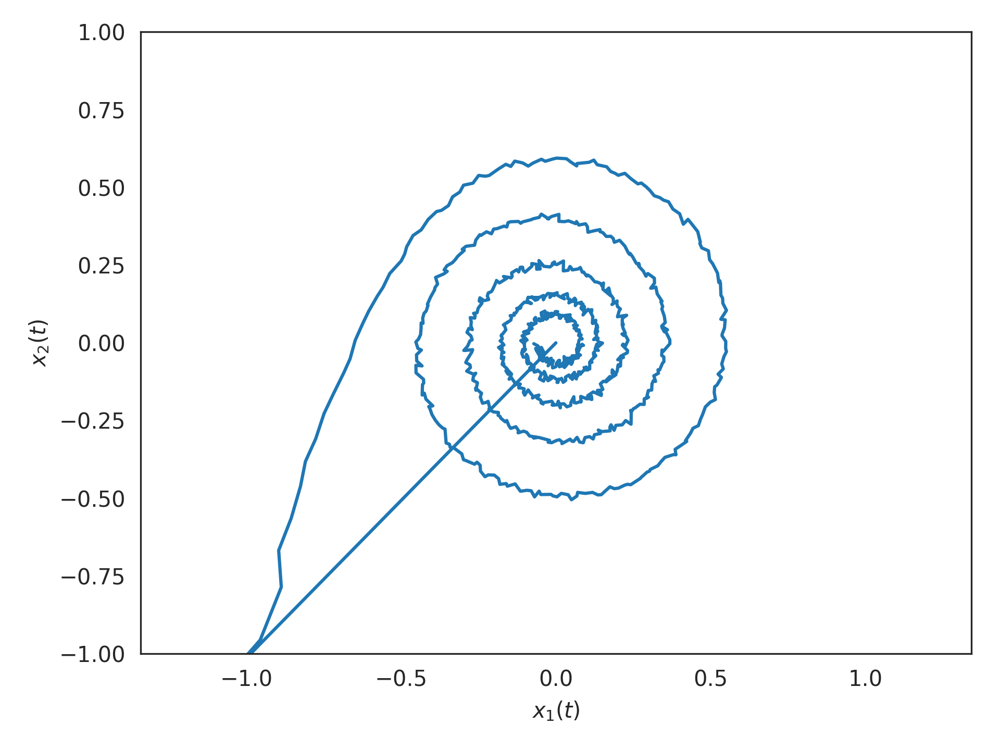

nengolib.networks.LinearNetwork¶
-
class
nengolib.networks.LinearNetwork(sys, n_neurons_per_ensemble, synapse, dt, radii=1.0, input_synapse=None, output_synapse=None, realizer=Hankel(), solver=Default, label=None, seed=None, add_to_container=None, **ens_kwargs)[source]¶ Network implementing a linear time-invariant (LTI) system.
This network implements the following linear state-space model:
\[\begin{split}\dot{{\bf x}}(t) &= A{\bf x}(t) + B{\bf u}(t) \\ {\bf y}(t) &= C{\bf x}(t) + D{\bf u}(t)\end{split}\]This works by first realizing a state-space representation from the given
sysandrealizer, and then usingss2sim()to apply a generalization of Principle 3 from the Neural Engineering Framework (NEF) to map the system onto the givensynapse. This yields amappedsystem whose state-space matrices give the transformation matrices for the resulting Nengo network.Parameters: sys :
linear_system_likeLinear system representation.
n_neurons_per_ensemble :
integerNumber of neurons to use per ensemble (i.e., per dimension).
synapse :
nengo.synapses.SynapseRecurrent synapse used to implement the dynamics, passed to
ss2sim().dt :
floatorNoneSimulation time-step (in seconds), passed to
ss2sim(). IfNone, then this uses the continuous form of Principle 3 (i.e., assuming a continuous-time synapse with negligible time-step). If provided, thensyswill be discretized and the discrete form of Principle 3 will be applied. This should always be given for digital simulations.radii :
floatorarray_like, optionalRadius of each dimension of the realized state-space. If a single
float, then it will be applied to each dimension. Ifarray_like, then its length must matchsize_state. Defaults to1.input_synapse :
nengo.synapses.Synapse, optionalInput synapse connecting from
inputnode. Defaults toNoneto discourage double filtering, but should typically match thesynapseparameter.output_synapse :
nengo.synapses.Synapse, optionalOutput synapse connecting to
outputnode. Defaults toNone.realizer :
AbstractRealizer, optionalMethod of obtaining a state-space realization of
sys. Defaults toHankel.solver :
nengo.solvers.Solver, optionalSolver used to decode the state. Defaults to
nengo.solvers.LstsqL2(withreg=.1).label : str, optional (Default: None)
Name of the network.
seed : int, optional (Default: None)
Random number seed that will be fed to the random number generator. Setting the seed makes the network’s build process deterministic.
add_to_container : bool, optional (Default: None)
Determines if this network will be added to the current container. If None, this network will be added to the network at the top of the
Network.contextstack unless the stack is empty.**ens_kwargs :
dictionary, optionalAdditional keyword arguments are passed to the
nengo.networks.EnsembleArraythat represents thestate.See also
Notes
By linearity, the
input_synapseand theoutput_synapseare interchangeable with one another. However, this will modify the state-space (according to these same filters) which may impact the quality of representation.Examples
>>> from nengolib.networks import LinearNetwork >>> from nengolib.synapses import Bandpass
Implementing a 5 Hz
Bandpass()filter (i.e., a decaying 2D oscillator) using 1000 spiking LIF neurons:>>> import nengo >>> from nengolib import Network >>> from nengolib.signal import Balanced >>> with Network() as model: >>> stim = nengo.Node(output=lambda t: 100*int(t < .01)) >>> sys = LinearNetwork(sys=Bandpass(freq=5, Q=10), >>> n_neurons_per_ensemble=500, >>> synapse=.1, dt=1e-3, realizer=Balanced()) >>> nengo.Connection(stim, sys.input, synapse=None) >>> p = nengo.Probe(sys.state.output, synapse=.01) >>> with nengo.Simulator(model, dt=sys.dt) as sim: >>> sim.run(1.)
Note there are exactly 5 oscillations within 1 second, in response to a saturating impulse:
>>> import matplotlib.pyplot as plt >>> plt.plot(*sim.data[p].T) >>> plt.xlabel("$x_1(t)$") >>> plt.ylabel("$x_2(t)$") >>> plt.axis('equal') >>> plt.xlim(-1, 1) >>> plt.ylim(-1, 1) >>> plt.show()
Attributes
AAstate-space matrix of mappedLinearSystem.BBstate-space matrix of mappedLinearSystem.CCstate-space matrix of mappedLinearSystem.DDstate-space matrix of mappedLinearSystem.all_connections(list) All connections in this network and its subnetworks. all_ensembles(list) All ensembles in this network and its subnetworks. all_networks(list) All networks in this network and its subnetworks. all_nodes(list) All nodes in this network and its subnetworks. all_objects(list) All objects in this network and its subnetworks. all_probes(list) All probes in this network and its subnetworks. config(.Config) Configuration for this network. inputNengo object representing the input u(t)to the system.mappedMapped LinearSystem.n_neurons(int) Number of neurons in this network, including subnetworks. outputNengo object representing the output y(t)of the system.realizationRealized LinearSystem.realizer_resultThe RealizerResultproduced byrealizer.size_inInput dimensionality. size_outOutput dimensionality. size_stateState dimensionality. stateNengo object representing the state x(t)of the system.Methods
add(obj)Add the passed object to Network.context.copy([add_to_container])default_config()Constructs a ~.Config object for setting defaults.